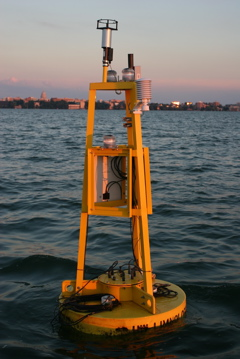

Lake Mendota Buoy
Operated by the UW-Madison's Center for Limnology, David Buoy records water quality measurements every minute on Lake Mendota. Below are real-time data from the middle of the lake. Data are not quality controlled.

Operated by the UW-Madison's Center for Limnology, David Buoy records water quality measurements every minute on Lake Mendota. Below are real-time data from the middle of the lake. Data are not quality controlled.
